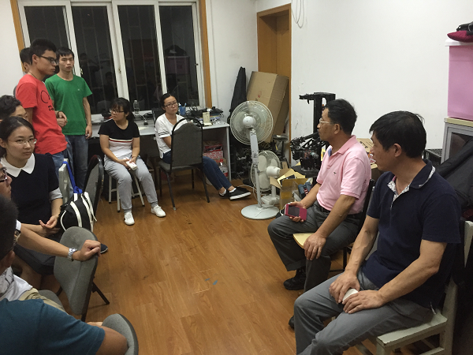

2016年9月13日晚8时，在延长校区机械附楼209-3室举行自强队关于中国机器人大赛长沙赛的赛前会议。出席此次会议的有自强队指导老师陈万米老师和黄慎之老师。
会议期间，陈万米老师对此次上海大学自强队参与的中国机器人大赛长沙赛进行了进一步的动员，强调了此次大赛的重要性，希望自强队能不辱使命在此次机器人大赛中展现出上海大学学生的拼搏精神与创新能力。随后，陈万米老师认真地询问自强队队员们在本次大赛中所遇到的问题，大到各个机器人模块的调试问题，小到轮子底盘的橡胶套。
随后黄慎之老师强调了赛前准备的重要性，队员要取得良好的成绩关键在于充足的赛前准备。黄老师同时又分享了上海大学自强队飞思卡尔队的参赛经验，鼓励大家吃苦在赛前，才能不辱使命取得好成绩。
通过此次会议，不仅解决了很多机器人的实际问题，指出了备赛的重点，同时也动员了队员们的积极性。相信在自强队所有成员的努力下，上海大学一定能在此次中国机器人大赛上取得优异的成绩。
机自学院自强队
2016.9.13